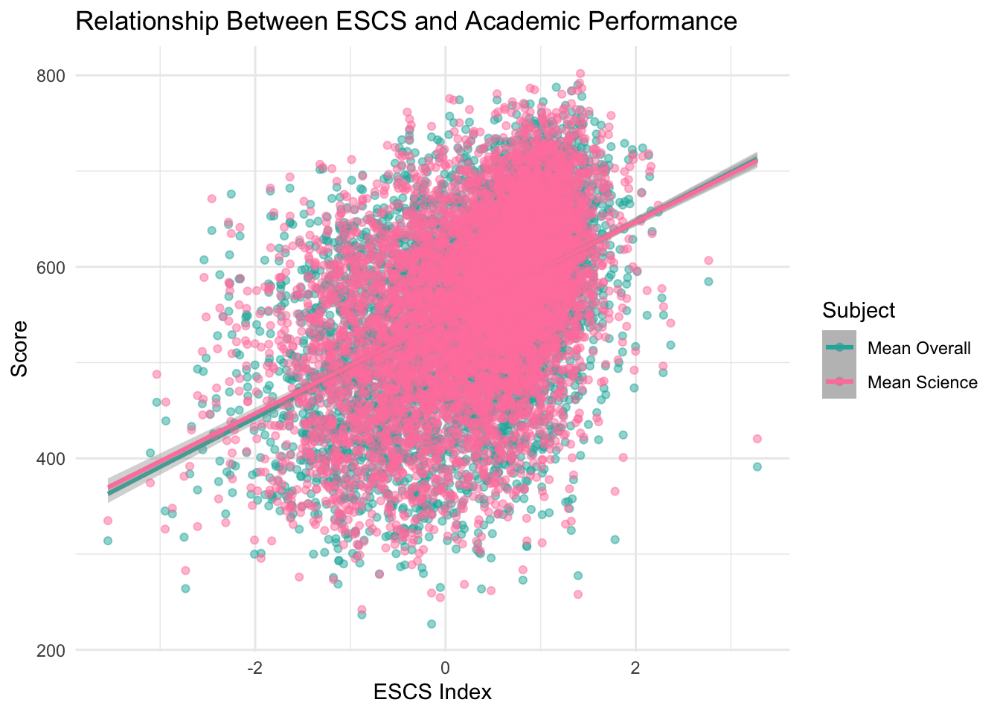
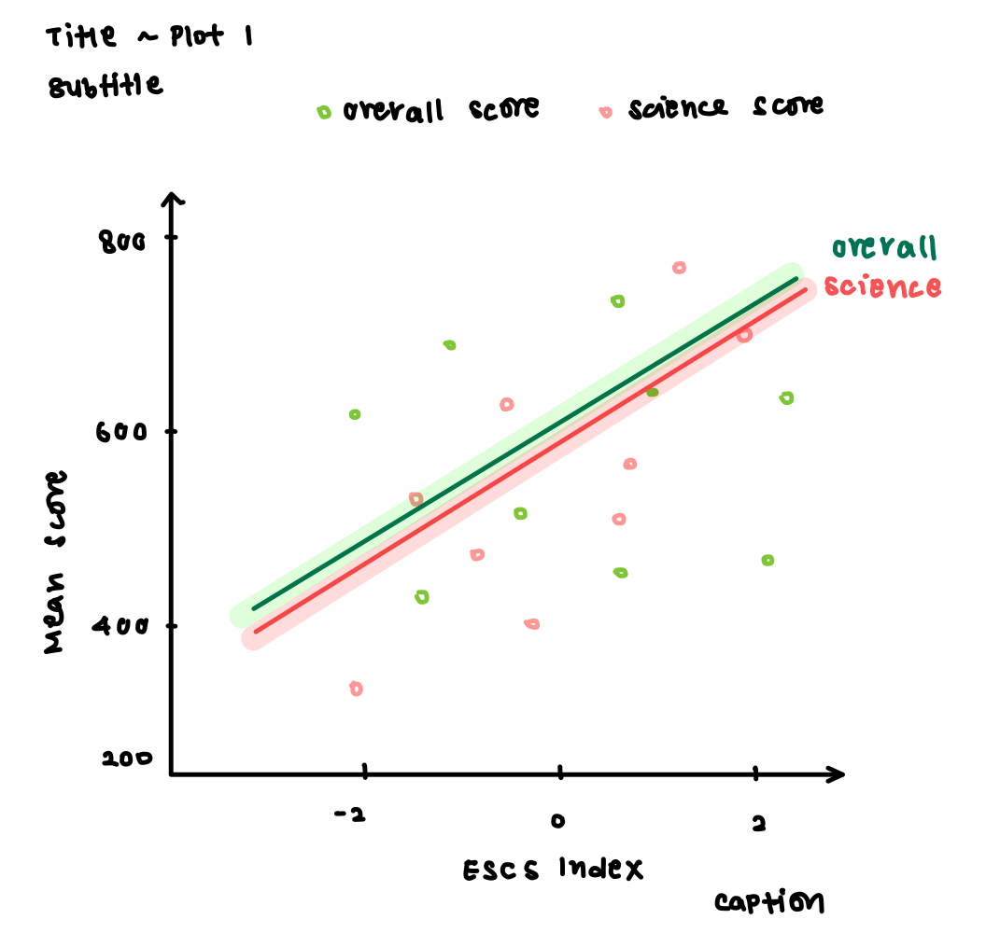
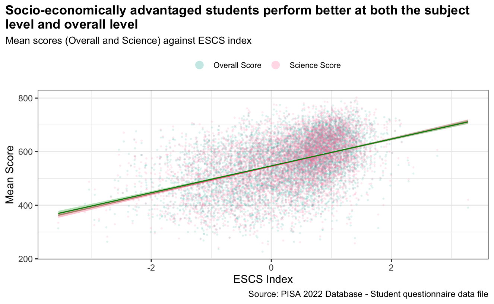
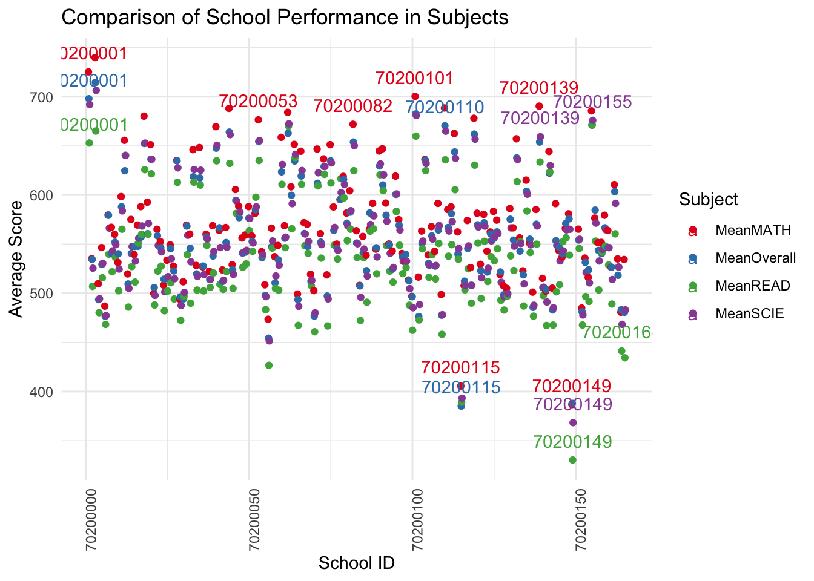
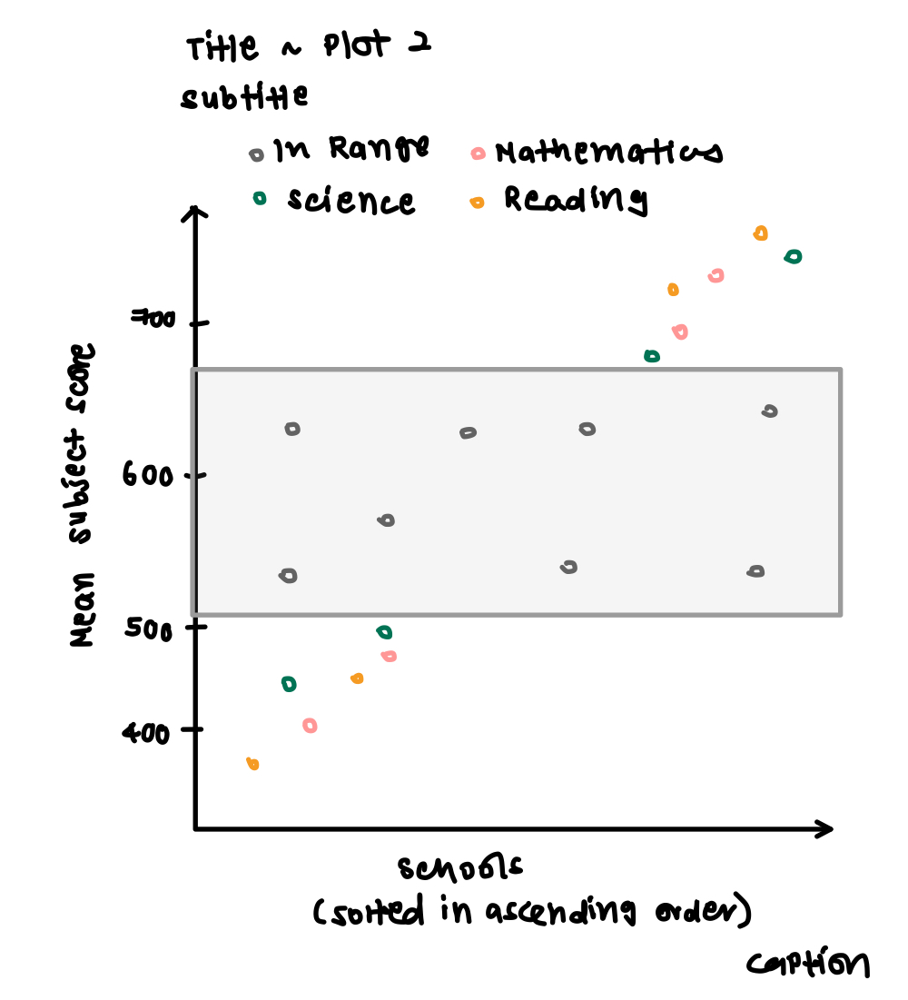
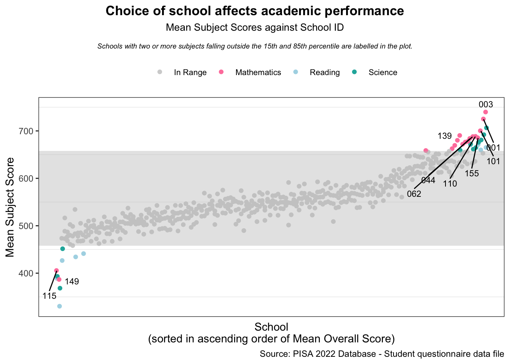

pacman::p_load(haven, tidyverse, ggplot2, dplyr, readr, ggpubr,
scales,forcats, gridExtra, corrplot, Hmisc, lubridate,knitr, kableExtra,patchwork,
ggiraph, ggrepel)DataVis Makeover
In this exercise, we aim to apply data visualisation design practices and principles to improve on the visualisations created by peers in Take-Home Exercise 1 .
The original dataset was downloaded from the PISA 2022 Database, titled Student Questionnaire Data File. The file downloaded was cy08msp_stu_qqq.sas7bdat.
1. Preliminary Steps
1.1 Importing Relevant R Packages
1.2 Preparing the Data
As instructed, the original data prepared by the peer should be left unchanged as much as possible unless there is value-add in supplementing the data. The data preparation steps taken by the student will thus be replicated, with adjustments made in later steps as needed.
Code for importing data
stu_qqq <- read_sas("Data/cy08msp_stu_qqq.sas7bdat")
stu_sg <- stu_qqq %>% filter(CNT == "SGP")
write_rds(stu_sg, "Data/stu_SG.rds")stu_qqq_SG <- read_rds("data/stu_sg.rds")34 variables relating to the Student ID, School ID, gender of students, ESCS index of students, and subject performance across Mathematics, Science and Reading were extracted into a new table stu_qqq_SG_01.
Code for extracting variables
stu_qqq_SG_01 <- stu_qqq_SG[, c("CNTSTUID", "CNTSCHID", "ST004D01T", "ESCS",
"PV1MATH", "PV2MATH", "PV3MATH", "PV4MATH", "PV5MATH",
"PV6MATH", "PV7MATH", "PV8MATH", "PV9MATH", "PV10MATH",
"PV1READ", "PV2READ", "PV3READ", "PV4READ", "PV5READ",
"PV6READ", "PV7READ", "PV8READ", "PV9READ", "PV10READ",
"PV1SCIE", "PV2SCIE", "PV3SCIE", "PV4SCIE", "PV5SCIE",
"PV6SCIE", "PV7SCIE", "PV8SCIE", "PV9SCIE", "PV10SCIE")]
write_rds(stu_qqq_SG_01,
"data/stu_qqq_SG_01.rds")The average Plausible Value (PV) was found for each subject. The overall performance for each student across the three subjects was also found by finding the average of the mean of the three subjects.
Code for averaging PVs
stu_qqq_SG_01 <- stu_qqq_SG_01 %>%
rowwise() %>%
mutate(
MeanMATH = mean(c(PV1MATH, PV2MATH, PV3MATH, PV4MATH, PV5MATH,
PV6MATH, PV7MATH, PV8MATH, PV9MATH, PV10MATH), na.rm = TRUE),
MeanREAD = mean(c(PV1READ, PV2READ, PV3READ, PV4READ, PV5READ,
PV6READ, PV7READ, PV8READ, PV9READ, PV10READ), na.rm = TRUE),
MeanSCIE = mean(c(PV1SCIE, PV2SCIE, PV3SCIE, PV4SCIE, PV5SCIE,
PV6SCIE, PV7SCIE, PV8SCIE, PV9SCIE, PV10SCIE), na.rm = TRUE),
MeanOverall=mean(c(PV1MATH, PV2MATH, PV3MATH, PV4MATH, PV5MATH,
PV6MATH, PV7MATH, PV8MATH, PV9MATH, PV10MATH,
PV1READ, PV2READ, PV3READ, PV4READ, PV5READ,
PV6READ, PV7READ, PV8READ, PV9READ, PV10READ,
PV1SCIE, PV2SCIE, PV3SCIE, PV4SCIE, PV5SCIE,
PV6SCIE, PV7SCIE, PV8SCIE, PV9SCIE, PV10SCIE), na.rm = TRUE)
) %>%
ungroup() %>%
select(-matches("^PV\\d+MATH$"), -matches("^PV\\d+READ$"),
-matches("^PV\\d+SCIE$"), MeanMATH, MeanREAD, MeanSCIE,MeanOverall)2. Data Visualisation Critique
The critique and improvements proposed will be based on clarity and aesthetics.
2.1 Scatter Plot of Score Against MeanOverall
In the original scatterplot designed, the mean overall score and mean Science scores were plotted against the ESCS index to visualise the relationship between the overall scores and Science scores with socioeconomic status as shown below.
Code for original scatterplot
ggplot(stu_qqq_SG_01, aes(x = ESCS)) +
geom_point(aes(y = MeanOverall, color = "Overall"), alpha = 0.5) +
geom_smooth(aes(y = MeanOverall, color = "Overall"), method = 'lm') +
geom_point(aes(y = MeanSCIE, color = "Science"), alpha = 0.5) +
geom_smooth(aes(y = MeanSCIE, color = "Science"), method = 'lm') +
scale_color_manual(values = c("Overall" = "lightseagreen", "Science" = "palevioletred1"),
name = "Subject",
labels = c("Overall" = "Mean Overall", "Science" = "Mean Science")) +
theme_minimal() +
labs(title = "Relationship Between ESCS and Academic Performance",
x = "ESCS Index", y = "Score")
2.1.1 Critique of Scatterplot
The choice of a scatterplot with trend lines was good for visualising the relationship between the overall performance and subject-specific performance.
Due to the numerous records, the points are highly clustered together in the plot. Coupled with the relatively high opacity of the points (
alpha=0.5), the middle region of the plot is obscured. The points for overall performance and Science performance cannot be differentiated due to the high density of markers in the middle region. Further, the concentrated markers are covering the two trend lines. Important information may thus not be visible.The confidence intervals of the trend lines overlap largely due to the close proximity of the two lines. This makes it impossible to differentiate the confidence intervals of the lines.
The title is descriptive but serves little purpose in explaining the visualisation. It does not tell the audience the context, such as the main highlight or story.
The axes label does not aid the audience in interpreting the graph as
Mean Overalldoes not explain anything if there is no context provided on the data preparation steps.There is no caption to present the source of the data.
The white background ensures the contrast between the background and the plot elements is obvious, making the plot stand out clearly.
The soft grid lines used ensure minimal distraction from the data.
There are no tick marks, making it rather hard to read the axes especially since both axes are using a continuous scale.
There is significant white space due to the legend.
2.1.2 Proposed Improvements for Scatterplot
One of the main problems of the original visualisation is the highly cluttered points obscuring important information. In depicting the relationship between academic performance and socioeconomic status, the trend lines are the most salient and should draw the most attention. In contrast, the individual scores should remain in the background and only serve to supplement the trend line.
To facilitate this, the trend line for overall performance and Science performance can be plotted using a darker shade compared to its corresponding subject marker. The score markers can be made more transparent by increasing alpha and its border can be made thinner using stroke so that the markers do not overwhelm the plot area. A sketch of the proposed changes is shown below. Furthermore, the confidence interval of each line can be differentiated by setting its colour to correspond to its marker and trend line using fill.

2.1.3 Makeover of Scatterplot
ggplot2 Explanation
For the score markers for overall and Science performance:
The transparency of the score markers was increased by setting
alpha=0.15.The size of the score markers was decreased by setting
size=1.The border around the score markers was removed by setting
stroke=NA.
For the trend lines for overall performance and Science:
The colour of the trend line was set to a darker shade by setting the
colorargument to specific RGB codes.The colour of the confidence interval was set to a shade lighter than the trend line by setting the
fillargument to specific RGB codes.
For other aspects of the plot,
The title and subtitle were added using the
ggtitle()function. The appearance and position of the titles were adjusted using theplot.titleargument of thetheme()function. Appearance can be controlled with options such asfamily,sizeorcolorwhile position can be controlled withhjustandvjust. The title and subtitle position was set respect to the whole plot instead of the panel using theplot.title.positioncomponent of thethemefunction.The axes labels were added using
scale_y_continuousandscale_x_continuous.The legend was adjusted using the
legend.position,legend.titleandlegend.textarguments of thetheme()function. As the marker size is set to 1 in thegeom_point(), the markers are displayed as-is in the legend. This makes the legend rather hard to read as the points are very small. To change the size of the markers shown in the legend,guide()andguide_legend()was used to override the aesthetic parameters stated ingeom_point()so the aesthetic parameters of the legend key can be specified instead.The caption was added using the
captionargument in thelabs()function.

ggplot(data=stu_qqq_SG_01, aes(x=ESCS)) +
scale_color_manual(values = c("Overall Score"="lightseagreen", "Science Score"="palevioletred1")) +
theme_bw() +
geom_point(aes(y = MeanOverall, color = "Overall Score"),
# Increasing transparency of marker
alpha=0.15,
# Decreasing size of marker
size=1,
# Removing border around marker
stroke=NA) +
geom_point(aes(y=MeanSCIE, color="Science Score"), alpha=0.15, size=1, stroke=NA) +
geom_smooth(aes(y=MeanOverall), method="lm",
# Setting colour of trendline to darker shade
color='#F26B8A',
# Setting colour of confidence interval to correspond with markers and line
fill='#FE7F9C') +
geom_smooth(aes(y=MeanSCIE), method="lm", color='#028A0F', fill='#5DBB63') +
# Adding a title and subtitle
ggtitle(label="Socio-economically advantaged students perform better at both the subject \nlevel and overall level",
subtitle="Mean scores (Overall and Science) against ESCS index") +
theme(plot.title=element_text(face='bold', size=13),
plot.subtitle=element_text(size=10),
plot.title.position="plot") +
# Adjusting axes
scale_x_continuous(name="ESCS Index") +
scale_y_continuous(name="Mean Score") +
# Adjusting legend
theme(legend.position="top",
legend.title=element_blank(),
legend.text=element_text(size=8)) +
guides(color=guide_legend(override.aes=list(size=4))) +
# Adding caption
labs(caption="Source: PISA 2022 Database - Student questionnaire data file", size=6)2.1.4 Interactivity of Scatterplot
However, there are still overlaps of elements in the proposed scatterplot. The two trend lines are extremely close together, causing one to cover the other significantly. There are two possible solutions to this issue:
- Remove one of the trend lines. As both trend lines are almost running in parallel and extremely close to each other, some might argue they are displaying the same relationship between academic performance and socioeconomic status. Having both the subject-specific and overall trend lines may thus be excessive. However, only retaining the trend line for overall performance hides valuable subject-level information. It may be the case where one subject performance displays a relationship with socioeconomic status opposite to that of the other two but its effects was cancelled out when overall performance was found. Only retaining the trend line for Science would not inform readers of the relationship with overall performance, which is likely the main concern for most.
- Introduce interactivity in the plots. The trend lines for overall score and Science scores can be differentiated using hover effects where the reader can hover their mouse over the visualisation to highlight one trend line.
The below tabset show details the preliminary steps taken to develop the interactive scatterplot.
To prepare for interactive data visualisation, the data was converted from wide to long format by pivoting the MeanSCIE and MeanOverall columns to a single column and adding a new column for Subject.
colnames(stu_qqq_SG_01)[7] = "Overall"
colnames(stu_qqq_SG_01)[8] = "Science"
stu_qqq_SG_02 <- pivot_longer(stu_qqq_SG_01[, c(4, 7, 8)], cols=c("Overall", "Science"))
colnames(stu_qqq_SG_02)[2] = "Subject"
colnames(stu_qqq_SG_02)[3] = "Score"
stu_qqq_SG_02 <- na.omit(stu_qqq_SG_02)plot2 <-
ggplot(data=stu_qqq_SG_02, aes(x=ESCS, y=Score)) +
theme_bw() +
ggtitle(label="Socio-economically advantaged students perform better at both the \nsubject level and overall level",
subtitle="Mean scores (Overall and Science) against ESCS index") +
theme(plot.title=element_text(face='bold', size=13),
plot.subtitle=element_text(size=10),
plot.title.position="plot") +
scale_x_continuous(name="ESCS Index") +
scale_y_continuous(name="Mean Score") +
theme(legend.position="top",
legend.title=element_blank(),
legend.text=element_text(size=8)) +
guides(color=guide_legend(override.aes=list(size=4))) +
labs(caption="Source: PISA 2022 Database - Student questionnaire data file", size=6) +
geom_point_interactive(aes(data_id=Subject, tooltip=Subject, color=Subject),
alpha=0.15, size=1, stroke=NA) +
geom_smooth_interactive(aes(data_id=Subject, tooltip=Subject, color=Subject),
method="lm", se=FALSE,
linewidth=0.5)2.1.5 Final Visualisation for Scatterplot
Introducing Interactivity
In the revised improved scatterplot, the interactivity of the plot was introduced by using geom_point_interactive() and geom_smooth_interactive(). The user can toggle between the trend lines for overall performance and Science performance. To illustrate, when the user places his/her cursor over the trend line or any marker for overall performance, the trend line for overall performance and the score markers for overall performance will be highlighted in pink and purple respectively. Elements irrelevant to overall performance (trend line and score markers for Science performance) will be greyed out. This allows for increased clarity for overall performance by reducing the clutter visible to the reader.
girafe(ggobj=plot2,
width_svg=6,
height_svg=6*0.618,
options=list(
opts_hover(css="fill:purple;"),
opts_hover_inv(css="fill:grey; opacity:0.2;")))2.2 Strip Chart of School and Academic Performance
In the original stripchart designed, the mean score of each subject was plotted against the student’s School ID to visualise the relationship between the student’s school and academic performance as shown below.
Code
colnames(stu_qqq_SG_01)[7] = "MeanOverall"
colnames(stu_qqq_SG_01)[8] = "MeanSCIE"
long_data <- stu_qqq_SG_01 %>%
gather(key = "Subject", value = "Score", MeanMATH, MeanREAD, MeanSCIE, MeanOverall) %>%
group_by(CNTSCHID, Subject) %>%
summarise(AverageScore = mean(Score, na.rm = TRUE)) %>%
ungroup() %>%
mutate(Label = ifelse(AverageScore > 650 | AverageScore < 450, as.character(CNTSCHID), ""))
# Create a dot plot to compare the average performance of different schools
ggplot(long_data, aes(x = CNTSCHID, y = AverageScore, color = Subject)) +
geom_point(position = position_dodge(width = 0.5)) +
geom_text(aes(label = Label), check_overlap = TRUE, vjust = -1, position = position_dodge(width = 0.5)) +
theme_minimal() +
labs(title = "Comparison of School Performance in Subjects",
x = "School ID", y = "Average Score") +
scale_color_brewer(palette = "Set1") +
theme(axis.text.x = element_text(angle = 90, hjust = 1)) 
2.2.1 Critique of Stripchart
With 167 schools each having 4 points, the large number of points clutters the entire plot and causes any valuable insights to be unintuitive. The relationship between the choice of school and academic performance is rather hidden and careful scrutiny of the plot is required to decipher the relationship.
The x-axis plots the 8-digit School ID in ascending order, which serves little purpose for two reasons. First, the first five digits of 70200 are the same for all schools in Singapore as it is the 6-digits National Centre Code. The unique identifier for schools is only the last three digits, indicating that retaining the whole 8-digit code is only adding on to the clutter in the plot and has little value-add. Second, no contextual background was provided by PISA on the School IDs. Therefore, simply sorting the x-axis of School IDs in ascending order does not aid in increasing the clarity or interpretability of the visualisation.
Four points were plotted for each school, namely the mean scores for Science, Reading, Mathematics and overall performance. However, the mean overall score was computed as the average of the other 3 subject scores. With the overall score being a linearly derived value of the other 3 variables, it would not only clutter the data but also not provide any additional valuable insights.
The title is descriptive but serves little purpose in explaining the visualisation. It does not tell the audience the context, such as the main highlight or story.
The axes label does not aid the audience in interpreting the graph as
MeanMATH,MeanOverall,MeanREADandMeanSCIEdoes not explain anything if there is no context provided on the data preparation steps.There is no caption to present the source of the data.
The white background ensures the contrast between the background and plot elements is obvious, making the plot stand out clearly.
The soft grid lines used ensure minimal distraction from the data.
There is significant white space due to the legend.
The x-axis labels are vertical, which makes it rather hard to read.
2.2.2 Proposed Improvements for Strip Chart
The first main improvement would be to remove the first five digits of the School ID for all records as only the last three digits serve as the unique identifier for schools in Singapore. This will help to significantly reduce the clutter around the x-axis and plot area when using the School ID to label the axis and salient data points.
The second main improvement would be to include 15th and 85th quartiles of the overall scores in the visualisation. Data points lying within the stipulated range coloured grey as they are less relevant in finding the relationship between schools and academic performance as they form the majority of the data and provides no value in identifying schools that has exceptionally high or low performances. By colouring such points grey and leaving data points falling outside the specified coloured, it draws attention to the more salient outlier points and reduces the clutter introduced by the less relevant majority points. Furthermore, using quartiles to identify schools with relatively higher or lower performance is a more data-driven approach compared to the peer’s method of using absolute values derived from observation of the visualisation.
The third main improvement would be to sort the x-axis (hence School IDs) by the mean overall performance. This way, the schools at the extreme ends with relatively lower or higher academic performance can be more easily identified.

2.2.3 Makeover of Scatterplot
ggplot2 Explanation
The interquartile range was added using the
annotate()function from theggplot2package.annotate()was used instead ofgeom_rect()asgeom_rect()expects the same amount of data as that passed toggplot(). It will thus plot hundreds of rectangles above each other, causing lowering thealphato have little to no impact on the transparency of the rectangle. In contrast,annotate()draws the exact amount of rectangles as specified by the coordinates. This often having only one or few rectangles drawn such that its transparency can be much easily adjusted.The data points that falls within the interquartile range was coloured grey by creating a category “In Range” in the Subject column. If the score falls within the 15th and 85th quantile, its subject records was replaced with”In Range” in the Subject column. The colours were then manually set using
scale_color_manual()to assign grey to the “In Range” category in Subject.The x-axis was sorted based on ascending order of mean overall scores using the
fct_reorder()function.The x-axis labels and ticks were removed as labelling all 167 schools will only clutter up the plot area.
The labels for schools with two or more subjects falling outside the 15th and 85th quartiles were added using
geom_text_repel()instead ofgeom_text()as it helps repel text labels away from each other so that the labels do not interfere with each other.Vertical grid lines were removed using
panel.grid.major()as the numerous lines was cluttering the visualisation.
# Removing first 5 digits of CNTSCHID
long_data$CNTSCHID <- substr(long_data$CNTSCHID, 6, 8)
# Removing MeanOverall
long_data <- long_data[-which(long_data$Subject %in% "MeanOverall"), ]
# Renaming subject records
long_data$Subject <- ifelse(long_data$Subject == "MeanREAD", "Reading", long_data$Subject)
long_data$Subject <- ifelse(long_data$Subject == "MeanMATH", "Mathematics", long_data$Subject)
long_data$Subject <- ifelse(long_data$Subject == "MeanSCIE", "Science", long_data$Subject)
# Finding 15th and 85th percentile for MeanOverall
qr1 <- quantile(stu_qqq_SG_01$MeanOverall, c(0.15, 0.85))[["15%"]]
qr2 <- quantile(stu_qqq_SG_01$MeanOverall, c(0.15, 0.85))[["85%"]]
# Checking if point is within range
long_data$Subject <- ifelse(long_data$AverageScore<=qr2 &
long_data$AverageScore>=qr1,
"In Range", long_data$Subject)
# Adding column for MeanOverall
overall <- stu_qqq_SG_01 %>% select(CNTSCHID, MeanOverall)
overall$CNTSCHID <- substr(overall$CNTSCHID, 6, 8)
df <- overall %>% group_by(CNTSCHID) %>% summarise(overall = mean(MeanOverall))
long_data <- merge(long_data, df, by="CNTSCHID")
# Finding schools with 2 or more points outside of range
long_data$in_range <- ifelse(long_data$AverageScore<=qr2 & long_data$AverageScore>=qr1, 1, 0)
check <- long_data %>% group_by(CNTSCHID) %>% summarise(sum=sum(in_range))
check <- check[rep(seq_len(nrow(check)), each=3), ]
long_data$in_range <- ifelse(check$sum>=2, 0, 1)
long_data$Label <- ifelse(long_data$in_range==1 & long_data$Subject=="Mathematics", long_data$CNTSCHID, "")ggplot(long_data, aes(x=fct_reorder(CNTSCHID, overall), y=AverageScore, color=Subject)) +
theme_bw() +
scale_x_discrete(expand=c(-1, 170)) +
scale_y_continuous(limit=c(329, 750)) +
# Removing vertical grid lines
theme(panel.grid.major = element_blank(),
axis.text.x=element_blank(),
axis.ticks.x=element_blank()) +
geom_point(position = position_dodge(width=0.5)) +
# Shading interquartile range
annotate("rect", alpha=0.4, fill="grey",
xmin=-Inf, xmax=Inf,
ymin=qr1,
ymax=qr2) +
# Colouring points within IQR grey
scale_color_manual(values=c("Mathematics"="palevioletred1",
"Science"="lightseagreen",
"Reading"="lightblue",
"In Range"="lightgrey")) +
# Labelling plot and axes
labs(title="Choice of school affects academic performance",
subtitle=expression(atop(
"Mean Subject Scores against School ID",
scriptstyle(italic("Schools with two or more subjects falling outside the 15th and 85th percentile are labelled in the plot.")))),
caption="Source: PISA 2022 Database - Student questionnaire data file", size=6,
x="School\n(sorted in ascending order of Mean Overall Score)",
y="Mean Subject Score") +
theme(plot.title=element_text(face='bold', size=13, hjust=0.5),
plot.subtitle=element_text(size=10, hjust=0.5),
plot.title.position="plot") +
# Changing position of legend
theme(legend.position="top",
legend.title=element_blank(),
legend.text=element_text(size=8)) +
scale_fill_manual(
values=c("palevioletred1", "lightblue", "lightseagreen", "lightgrey"),
breaks=c("Mathematics", "Reading", "Science")) +
# Labelling schools with 2 or more subjects
geom_text_repel(aes(label = Label),
vjust = -1,
position = position_dodge(width = 0.5),
color="black",
size=3) 2.2.4 Final Visualisation for Strip Chart
Code
ggplot(long_data, aes(x=fct_reorder(CNTSCHID, overall), y=AverageScore, color=Subject)) +
theme_bw() +
scale_x_discrete(expand=c(-1, 170)) +
scale_y_continuous(limit=c(329, 750)) +
# Removing vertical grid lines
theme(panel.grid.major = element_blank(),
axis.text.x=element_blank(),
axis.ticks.x=element_blank()) +
geom_point(position = position_dodge(width=0.5)) +
# Shading interquartile range
annotate("rect", alpha=0.4, fill="grey",
xmin=-Inf, xmax=Inf,
ymin=qr1,
ymax=qr2) +
# Colouring points within IQR grey
scale_color_manual(values=c("Mathematics"="palevioletred1",
"Science"="lightseagreen",
"Reading"="lightblue",
"In Range"="lightgrey")) +
# Labelling plot and axes
labs(title="Choice of school affects academic performance",
subtitle=expression(atop(
"Mean Subject Scores against School ID",
scriptstyle(italic("Schools with two or more subjects falling outside the 15th and 85th percentile are labelled in the plot.")))),
caption="Source: PISA 2022 Database - Student questionnaire data file", size=6,
x="School\n(sorted in ascending order of Mean Overall Score)",
y="Mean Subject Score") +
theme(plot.title=element_text(face='bold', size=13, hjust=0.5),
plot.subtitle=element_text(size=10, hjust=0.5),
plot.title.position="plot") +
# Changing position of legend
theme(legend.position="top",
legend.title=element_blank(),
legend.text=element_text(size=8)) +
scale_fill_manual(
values=c("palevioletred1", "lightblue", "lightseagreen", "lightgrey"),
breaks=c("Mathematics", "Reading", "Science")) +
# Labelling schools with 2 or more subjects
geom_text_repel(aes(label = Label),
vjust = -1,
position = position_dodge(width = 0.5),
color="black",
size=3) 
3. Learning Points
In this exercise, ggplot2 and its extensions were used to critique and makeover peer works, which aids in the implementation of best practices in data visualisation. It is important to take a step back occasionally while building visualisations to ensure that the visualisation continues to be clear and intuitive. For example, the second visualisation was overly cluttered with the numerous points and excessively long data labels. It would thus be helpful to step back to think whether all elements included in the plot are essential in delivering our message. In our case, the points falling within the 15th and 85th quantiles were redundant in showing that the choice of schools affect academic performance while the length of the data labels could be reduced by removing the first five digits as they did not provide any information on the school.